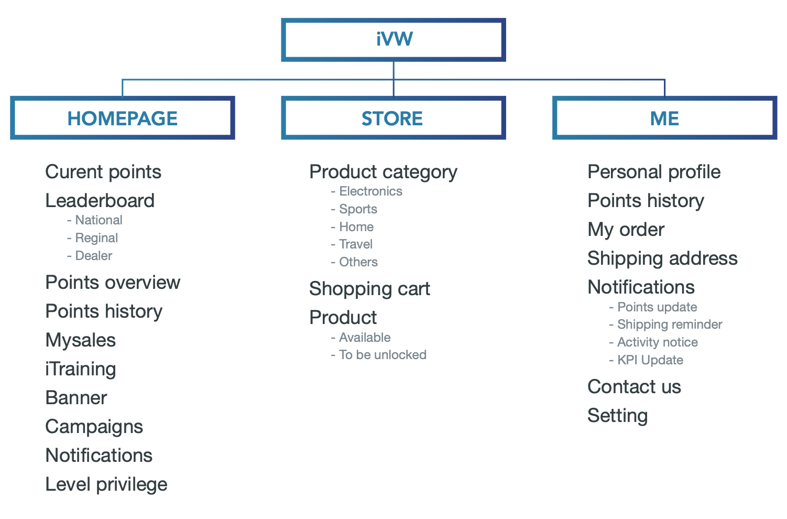

BACKGROUND
With the emergence of more millennials in the dealerships, Volkswagen Group (China) Import Co., Ltd. (here under would be called as VGIC) needs to develop an unique platform to motivate sales, retain performing employees as well as deliver cost-effective training to these group of young employees.
NEEDS ANALYSIS
KNOWING USER
WORKFLOW
CONCEPT DEVELOPMENT
After lots of research, we brainstormed the possible function of iVW app(the name used to be WEClub). And then we communicated with VGIC and finalized the functions of the first version of the app.
INFORMATION ARCHITECTURE
We prioritized features and organized what needed to be developed in the first release using card sorting method. The following figure shows the interface information structure of sales consultants. Due to different operation permissions and applicable functions, the functional modules of the app for employees in different positions are slightly different.
WIREFRAME
COLOR & ICONS
To demonstrate the premium and confident quality of VGIC, I selected the color #2B32B2 Bright Navy together with VW brand tone as dominant colors. Navy is the color that is reminiscent of deep relaxation and reliability. It is ideal for showing the app is professional.
USER INTERFACE

RESULT
· Delivered 120+ pages of interface design drafts
· Outputted 2 sets of design concept plans
· 98% employee download rate
· Rated 4.2/5🌟 in the Apple App Store
* The last two data were collected 2 months after the launch of iVW app.
WHAT I LEARNED & NEXT STEP
This is my first app that I participated from 0 to 1 and finally launched. I overcame many challenges of communicating with frontend developers about the effect of my design. I had a better idea of ​​what a programmer can achieve in a limited time. Following the process of agile development, I also learned that we don't have to do time-consuming and unimportant design in the early stages of the product. Design is actually an art of balance.
For the next steps, on the one hand, we would iterate our product according to the needs of our clients(VGIC). For instance, explain redemption rules more clearly to users in an appropriate manner. On the other hand, we would continue to optimize this app based on customer feedback, aiming to improve the user experience.